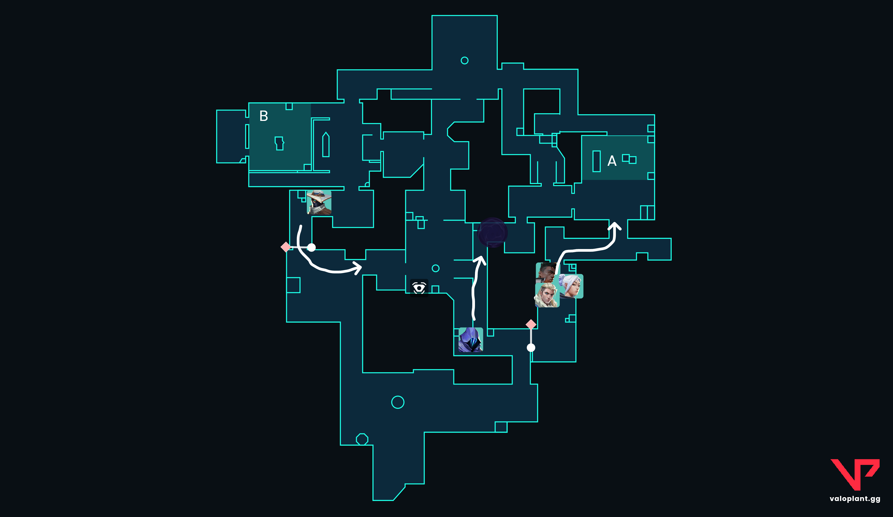

Estrategias
En ValoHub vas a encontrar estrategias y consejos para mejorar tu forma de jugar Valorant, tanto de manera individual como en equipo.
Comunicación y trabajo en equipo
La comunicación es una parte fundamental de Valorant. Compartir información sobre la posición de los enemigos, las habilidades utilizadas y las decisiones del equipo puede marcar la diferencia durante una ronda.
- Comunicar la posición de los enemigos.
- Informar cuando un enemigo utiliza una habilidad importante.
- Coordinar ataques y retakes con el equipo.
- Evitar dar información innecesaria durante la ronda.
Control del mapa
Controlar diferentes zonas del mapa permite obtener información y generar espacio para que el equipo pueda ejecutar sus jugadas.
- Buscar información antes de realizar una ejecución.
- Controlar zonas importantes del mapa.
- Utilizar las habilidades para bloquear o limitar espacios.
- Adaptarse a los movimientos del equipo enemigo.

Esta formación aprovecha la combinación de los 5 agentes para dominar las 3 zonas del mapa antes de definir la entrada al sitio A:
- Bloque de Ataque A Main (Sova, Jett, Phoenix): Grupo de choque principal. Sova revela la posición de los defensores en A, permitiendo que Jett y Phoenix abran el sitio con sus habilidades de entrada (dashes y flashes) para asegurar el sitio y plantar la Spike.
- Control de Mid (Omen): Avanza por el centro del mapa colocando un humo estratégico en la zona de Catwalk / Tree. Esto bloquea la visión de los defensores en Mid y evita que disparen al grupo de A desde el lateral.
- Lurker en B (Cypher): Se posiciona en B Lobby / B Main para escuchar las rotaciones enemigas, evitar que los defensores empujen por la espalda y castigar si el equipo rival abandona el sitio B por completo.